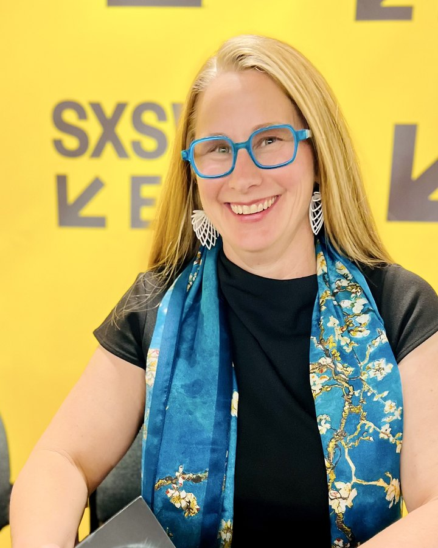

Data is a belonging of human experience
Ground Truth
Bast’s fourth anniversary and the opening of its ontology manifesto; supporting caregivers through understandable information.
Business & technology leadership
I build and lead teams that turn complex problems into systems people can understand, trust, and use.
I connect technical depth with business judgment—and a lifelong curiosity about people—to help institutions serve their communities better.
Founder & CEO, Bast AI · IBM Distinguished Engineer, appointed 2016 · Board trustee · Author

The work, connected
I have owned and grown businesses, developed leaders, and brought people together around problems worth solving.
At Bast, I lead engineers and domain experts building AI that makes answers traceable and uncertainty visible.
Through board service, teaching, writing, and public leadership, I connect technology with the lives it affects.
How I see the work
My background in anthropology and engineering shapes how I lead: understand the people and the mission, make the problem clear, and build the organization capable of solving it.
That thread connects a 23-year career at IBM, founding Bast, and serving institutions dedicated to science, education, and care.
The work in five outcomes
Writing & conversations
Ground Truth
Bast’s fourth anniversary and the opening of its ontology manifesto; supporting caregivers through understandable information.
WeAreDevelopers World Congress North America
Sponsorship, developing talent, and human accountability as AI changes how work gets done.
Trending in Education · Mike Palmer
Bast’s explainability architecture, Craig Hospital work, and the engineering choices behind trustworthy AI.
Service & stewardship
I serve on the boards of trustees of the Denver Museum of Nature & Science and Maryville University, and on the advisory board of Northwestern University’s Center for Advancing Safety of Machine Intelligence.
These roles connect the things I care about: how people learn, how knowledge is shared, and how institutions earn trust.